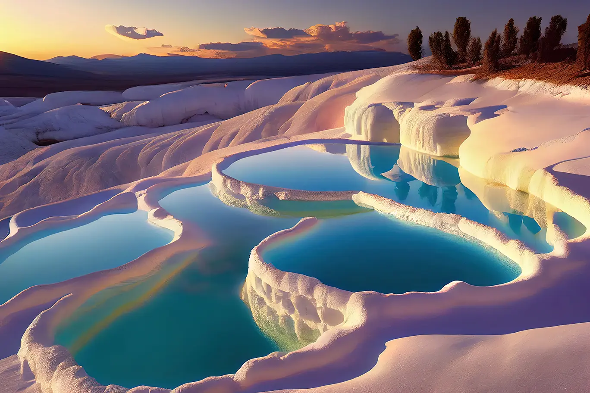
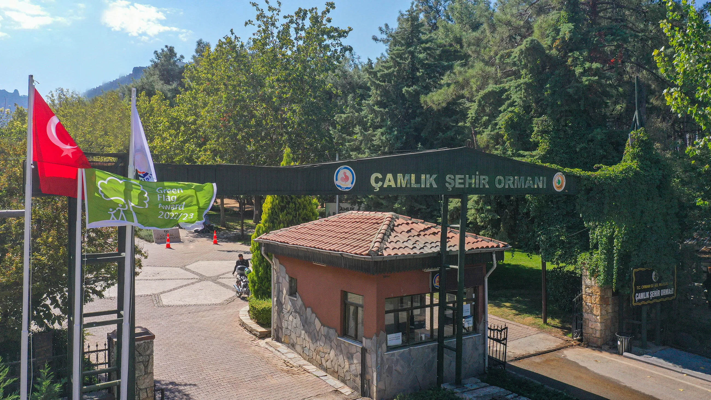

Denizli'de Gezilecek Yerler

Pamukkale
Travertenleri ile ünlü doğal bir harika.

Kaleiçi
Tarihi dokusuyla Denizli'nin kalbinde bir yer.

Çamlık Parkı
Doğa ile iç içe keyifli bir yürüyüş alanı.Mangal yapabileceğiniz ve yürüyüş yaparken hayvanat bahçesine gidebileceğiniz bir alan.